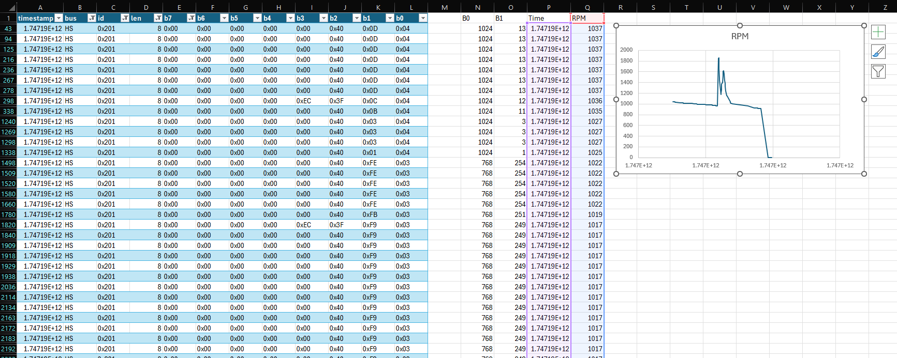
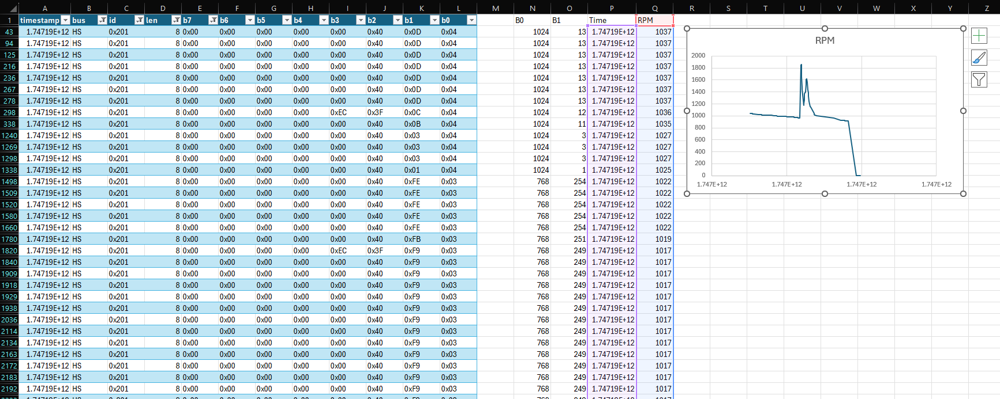

Intro
I've been working on the car where I can, but work is picking up for the summer. It's nice to know I'll always have hobbies whehn I get older :)
I've been doing lots of "CAD", 3D printing, and hardware prototyping. A couple more iterations on my fuse box design and some more CAN sniffing and I can start installing things!
Control Panel
I'm going to be adding lots of knickknacks, displays, gadgets, etc. I need some way to control them (mainly turn them on and off). After scouting out areas around the driver, I've decided on a side panel where higher-trim models put controls:
I want a bunch of switches, some buttons, and a display to put info about the car (fuel economy, coolant temp, service intervals, etc. I did some measuring and got to modelling in my favourite CAD software: Blender.
One error I made with the first iteration was making it the size of the entire top panel I pulled off - I don't actually have that much room!

With that, I started on V2:
The switches will toggle components on and off, the large button is for a horn, the small buttons are extra, and the dial/rotary encoder is for controlling the info display.
I still need to decide how to mount this to the trim - should I replace the top ABS piece, cut into it, etc.? I'm not sure yet.
Fuse Box(es)
All the new stuff I'm adding needs power. To make it easy and safe to deliver, I'm going to add two new fuseboxes: a small one fed directly from the battery, and a larger one running on switches power (only on when the car's on).
I'm no electrical engineer and not great when it comes to electricity. I want to make sure I don't light the car on fire, so here's my plan for keeping things safe:
- All systems I'm adding shouldn't draw more than ~25A, so I'll use 8 AWG wire from the battery to the fuse box
- Put a 40A fuse right next to the battery just in case things go terribly wrong
- Put a breaker inside the car so I can cut power to the battery-fed box (moreso for leaving the car off for long periods of time)
- Relay between the battery and accessory box, activated by a tap into the cigarette lighter fuse
- Fuses for each individual circuit
- Most circuits will run on 5V using switch-mode buck convertors
From there it's just running wires from the components back to the fuse box, using wire loom and tape where necessary.
I'm currently working on prototyping the fuse box mounting, but here's where I'm at so far:
I haven't sized this one up in the car yet, so that's about where the power situation lies for now. If the fit is good, I'll add a way to attach the mounting bracket to that metal rail and print it in PETG. Then there's some wiring to the battery and a fuse tap, and then I'm good to start adding things (exciting!).
Audio Switcher
I'm going to have a million (5) different audio sources I need to get into the car (aux, USB, Lightning, Bluetooth, carputer). I'm going to hijack the car's aux port, selecting which input I want to feed in through a little control knob. So... how am I gonna do this?
Starting out, my idea was to make a switchboard with a million aux cables that you manually plug into one port.
Pros: Cool n fun
Cons: You need to take your eyes off the road and hands off the wheel
So I looked into digital (or should I say analog) options.
Relays seemed like a good first step, and in the comments of a forum post I learned about the existence of solid-state analog relays (analog multi and de-multiplexers. I looked up datasheets for a bunch of different demultiplexers and settled on the CD4052B from TI. The 4052 specifically has 4 sets of stereo inputs that I'm feeding into one output. I have two of these chips, with one hooked into the other. This means I have 7 total inputs (giving me two extra if I ever add any more audio tomfoolery).
That's a lot of text, here are some pretty pictures:
It remains to be seen whether this solution will have noise, or work at all, but it's a good start.
CAN Sniffing
I found two great sources for the HS and MS CAN buses online. They have some decoded CAN packets and were a great place to start, though not entirely accurate to my car (e.g. the MS CAN bus runs at 125kbps rather than 250, some CAN IDs don't match up, etc.
All I really have to say about it is that I'm working on parsing in the data so I can send it out to all other modules:
 

I have a couple things I want to see if I can find like oil pressure, what doors are opened, and if the clutch is pressed.
Summary
I've been doing a lot of 3D printing! My poor print bed looks like a minefield - about 15% of it is unusable by now (maybe I can replace it with painter's tape?). There's still more to do - figure out a working fuse box mount, panel for the audio switcher display and controls, panel for a gear indicator display, USB port panels, etc. But I'm making stuff, learning, having fun and getting there!
Even if all I accomplish is Bluetooth audio and a way to see my fuel economy I'll be happy. I just like tinkering :)